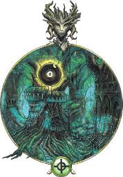
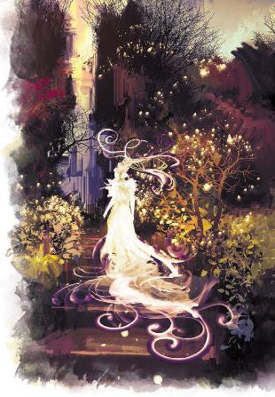

在每一种文化中都存在着童话故事——这些故事通过夸张和超自然的元素来警告孩子们恶行的后果或彰显社会的美德。在布鲁兰，流传着一个沉睡王子的故事，他被一个恶毒的鬼婆诅咒而陷入沉睡，直到樵夫之女用勇气拯救了他。在摩洛领，有一个比布鲁兰自身都更古老的故事，里面讲述了那拉孙夫人诅咒多达兰之子陷入永恒的睡眠，直到卑微的托朵拉斯将他唤醒。在达坎，有一个古老的故事，讲的是赫扎尔——一位挽歌咏者，他背叛了帝国，学习黑暗的魔法——如何将君王（marhu，达坎帝王）的儿子送入被诅咒的梦乡，直到一位平凡的迅捷之民（golin’dar，地精的达坎古名）将他拯救。
这只是在不同文化中反复出现的众多故事之一。确切的细节可能会有所改变——陷入沉睡之人是一位王子吗？他是达坎帝王的之子还在多达兰的子嗣？尽管故事的主旨和教训依然不变，但早在这些文化出现之前，这些故事就已经在其他地方开始流传。
在瑟兰尼斯的一层中，影中夫人诅咒了一位王子，令他陷入了永恒的沉眠。她照料这一处遍地奇迹的花园，并将自己的女儿藏在荆棘迷宫的中心。在最深的层面上，这便是妖精们的本质：故事。树精并非天生存在的精魄，她是当我们看到细长的树在风中飘摇，想象它是一位摄人心魄的美人时，希望这个世界上她实际存在的魔法所诞。瑟兰尼斯以标志性的故事作为基础，但它同时也是妖精的宫廷。在它的中心，半羊人和宁芙在月宫的阴影下曼舞，而至高妖精们则谋划着他们不朽的阴谋。这是个奇妙的领域，一切都围绕着冒险的点子而建立，但对那些拒绝理解其规则的人们来说，它也同样致命。
对凡人来说，瑟兰尼斯是最容易抵达的位面之一。只需要你住莱安在天空盈满之时，走进一个蘑菇圈，或者在林中跟随一段渺远的音乐。进入瑟兰尼斯也并不总是这么容易，但它可以像这样轻易做到。走错一步，你就可能会发现自己已经走进了瑟兰尼斯，沿着故事书中的英雄们的足迹，要与妖精王庭的统治者们进行危险的交易。
瑟兰尼斯无法预料，它最重要的规则是，每一层遵循着它们自己的故事。
魔幻国度Enchanted Realm。对抗幻术或附魔系法术的豁免具有劣势。当一个生物施展一个持续1分钟以上的幻术或附魔系法术时，其持续时间会翻倍。持续时间24小时以上的法术不会受到影响。
童话逻辑Storybook Logic。没有哪两个瑟兰尼斯的位层是相似的。每一个位层都依靠自己的故事运作，而特定的故事凌驾于一切规则之上。伤害类型可能会被替换或者变得无效，在窃火之谷，所有的火焰伤害都变成了冷冻伤害。使用特定技能的属性检定可能会获得优势或劣势。在其中一个位层，恢复生命值的法术可能全然无效，而另一位层，一杯酒可以当做治疗药水使用。但是，尽管这些效果应层而异，它们在所属的层级中是稳定而可靠的，并且基于当地故事的性质而合情合理地运作。
言出法随Words Have Power。在瑟兰尼斯，语言——尤其是承诺——具有力量。生物会对做出任何形式的正式承诺十分谨慎，尤其是面对至高妖精时。妖精们越是强大，背弃诺言的后果就会越严重。和不同妖精许下的诺言代价并不相同，违背和高等妖精的承诺可能只会导致一连串的厄运，在接下来的几次掷骰中具有劣势，而另一方面，对一位至高妖精许下的诺言本身就到这约誓（geas）的力量。妖精们自己便被这一限制所约束——尽管他们知晓这一点，对自己的诺言十分谨慎。
错乱时间Chaotic Time。时间在瑟兰尼斯变幻无常，每一位层的流速都不尽相同。一位冒险者可能只在瑟兰尼斯待了一夜，之后却发现艾伯伦已经过去了数年。但同样可能的是，一队冒险者们在其中一个位层拯救了王国，当上了国王和女王…但多年以后，当他们不小心穿过一扇门后，却发现自己的家中只过去了一个小时。当凡人回到艾伯伦时，时间往往会追上他们的脚步——在物质位面上流逝了更多时间时，的人们会迅速衰老，而有的人可能会重回青春，抹去在瑟兰尼斯度过的数十年时光。
瑟兰尼斯是所有形态的妖精的家园。小妖精们在树间飞舞，对居住在其中的树精们歌唱。这里的树上居住着鸟儿，而如果你对它们说话，其中之一会回答——可能是鸟，也可能是树，取决于故事如何。大部分瑟兰尼斯的居民们可分为以下四种。
这些瑟兰尼斯最常见的生物是位面的显能现象——森林中的小妖精、树精、鸟儿，以及有的时候树本身也是。这些配角的存在是因为，故事中需要他们的存在。他们有特定的角色要扮演。尽管大部分配角都是精类，但如果故事需要，任何生物都可能出现。一群狼？愤怒的巨人？一匹出现得恰到好处的白马？一切皆有可能。
配角们使用每个生物的标准资料卡，尽管它们可能是精类而不是原本的生物类型。这些生物并不认为自己是显能现象。它们十分单纯，没有真正的深度，除了在故事中扮演角色必须的渴望之外，也没有其他欲望，从不在乎时间的流逝。小妖精从不会厌倦自己唱的歌谣，也不会停下歌唱，质疑自己的存在。
配角们反映了瑟兰尼斯永恒不变的事实。饥饿的巨人将永远守护着井口。如果冒险者们击败了巨人，他们就会暂时成为英雄，这会感觉像是一场胜利，但如果他们稍晚些时候再回到领主的领地，巨人又会回来——或者又来了一个非常相似的巨人，它并不会记得他们，也不会承认他们之前的胜利。一般来说，配角们不能放弃自己岗位，或者离开自己的位层。
然而，和其他位面的显能现象相比，瑟兰尼斯的配角们能够获得升格。当锚点领主将白马赠与冒险者，它就变成了一匹凡间的骏马，他们能够将它骑着回家。漂流到显能区域的配角会变成通常的精类，能够在区域内居住下来直到死去为止。配角也可以通过在故事中成为更重要的角色来获得升格。一个单独的小妖精甚至可能连名字都没有，但如果冒险者们说服小妖精帮助他们，并且它在击败巨人的过程中起到了关键的作用，那么它就不再是个无名的小妖精了，它是“聪明杰克”，或者冒险者给它取的其他名字。如果一个显能现象变成了凡间的生物，它便可以去任何它喜欢的地方，甚至离开它的位层，跟随冒险者们回到艾伯伦。但如果死去，它便会永远消失。另一方面，显能现象能够成为高等妖精，在这种情况下，它依然是不朽的生物，仍然和故事紧密相连，只是有了更重要的角色和更多的个性。
瑟兰尼斯有两种凡间生物。一种最初是配角，但如今已经脱离了原本的故事，化作真实的生物。而第二种是天生的凡人，他们有着自己的文化和城市。其中最主要的便是居住在月辉谷的妖精山峰中的雅灵们。每一座尖塔都由一位至高妖精统治，他们塑造了当地雅灵们的个性。雅灵不像其他精类一样被故事所束缚，但位面的魔力激励他们效忠于所述的尖塔和其统治者。他们狩猎，狂欢，在月之王庭的阴谋中效忠于他们的君主。对他们来说，生活中很少会有其他的事物，然而，他们是如假包换的凡人，他们会相爱，会生育子嗣，会诞生，最终也会死亡。如果一位雅灵离开它自己的尖塔，无论是在瑟兰尼斯漫游还是进入艾伯伦的世界，他都会更多地着眼于时间的流逝。在凡间的凡人之中生活对雅灵来说是一根艰难的过程，与妖精王庭的琳琅满目相比，科瓦雷几乎乏善可陈。雅灵在凡间生活得越久，便会越接近凡间的生物。这也是为什么雅灵玩家角色是类人（精灵）而非精类的原因。
对瑟兰尼斯的雅灵们来说，季节的面相仍然是对他们当前心情和天性的一种表述。然而，季节也会被用作政治声明，反应了在月之王庭中对这一季节的支持程度。有时候，雅灵也会为了不冒犯主人而拒绝变为特定的季节。
雅灵是这一层中最常见的凡人，但也有少数的凡人从艾伯伦被吸引而来——包括来自琵拉斯·琵瑞尔的侏儒、流浪的绿吟者、被某一位至高妖精选中的凡人，或者意外踏入显能区域并寻找着回家之路的生物。
高等妖精通常和一处领地有关，或者在月辉谷中有一席之地，但他们有着自己的名字、身份和独特的个性。他们可以在至高妖精的故事中有自己的计划和情节，追寻爱情、复仇或其他野心。有时候，故事的主人公便是一位高等妖精，比如说在《沉睡王子》中，也许冒险者们真的能遇到聪明的樵夫女儿。然而，主角的位置通常会由冒险者填补，比如他们必须在瑟兰尼斯唤醒那位沉睡的王子。
任何精类生物都能作为基础成为一位高等精类。一位高等树精也许能通过她称之为家园的显能区域的所有树木视物，并控制其中的野兽。这并不是由法术来表现的，她也并不能控制其他地方的野兽。这仅仅是故事的一部分。
随着高等妖精的故事开枝散叶，他们的能力也同样会增长...但往往与故事的逻辑有关，而力量通常也会伴随着弱点。一位高等树精可能会免疫火焰——除非有人知晓她的真名，那会让她对火焰易伤。或者她可能免疫穿刺伤害但对挥砍伤害易伤。箭矢和矛拒绝对她攻击，但斧头渴求着将她砍倒。
至高妖精是瑟兰尼斯的基础，是推动故事发展的力量。高等妖精可能只会和一个故事相联系，而至高妖精可能会激发产生无数的故事。影中夫人是一位隐居的强大女巫的原型，她的愤怒会带来可怕的诅咒。她是《沉睡王子》故事中的反派，但她也诅咒那些从她的秘密花园中偷窃的盗贼，并且可能会对那些谨慎并带着礼物来拜访她的客人提供建议。在某些情况下，故事指的是至高妖精的名讳。在五国之中，当什么东西寻不见时，艾伯伦的人们知道是遗忘王子偷走了它，他的故事我们将会在第八章中讲述。其他的至高妖精也产生了故事，但这些故事都是通过当地的视角所见。影中夫人很早便创造出了《沉睡王子》的故事，但在艾伯伦，故事的反派是那拉孙夫人，或者挽歌咏者赫扎尔，或者索拉·卡夏。这对影中夫人来说正好，她并不需要凡人知晓她的名讳。
许多至高妖精居住在月辉谷。有的统治着妖精尖塔，而其他的则居住在月宫之中，王庭的阴谋便是他们所定义的故事。统治着位层的至高妖精被称为锚点领主，因为每一位至高妖精都是定义了自己所在领地的锚点。他们会为了狂欢或聚会驾临月宫，但更喜欢沉浸在自己的故事之中。
至高妖精在瑟兰尼斯和其显能区域中拥有强大的力量，但要在之外的世界中行动，他们需要代理人。有些至高妖精直接招募代理人，和绿吟者合作，或者训练邪术师或其他使者。一位至高妖精可以作为冒险团队的非凡赞助人。通常情况下，至高妖精希望自己的代理人采取和故事相关的行动，遗忘王子会命令他的代理人们去偷窃秘密和他人不再心爱之物。其他的一些至高妖精不需要代理人，他们希望凡人重演他们的故事，就像《沉睡王子》的许多版本一样。很久以前，挽歌咏者赫扎尔确实对君王之子降下诅咒，而索拉·卡夏是一个真实存在的人物，正好在一些方面酷似影中夫人。
卡夏和赫扎尔都不曾在知情的情况下侍奉影中夫人——但她可能在暗中帮助她们，或者在她们命运的道路上放置赠礼或障碍，让她们能够重演故事，不知不觉地成为至高妖精的化身。至高妖精不会被一劳永逸地杀死。只要他们的故事仍在传颂，至高妖精便会再度重生。然而，这通常会涉及一个高等妖精获得升格来填补这一角色。至高妖精依然存在，但他们和之前那一位并不完全相同。
第八章中有两位至高妖精，森林女王和遗忘王子以及关于他们位层、他们的目标以及他们能如何成为冒险者的助力——抑或敌人。在瑟兰尼斯至高妖精表格中提到了瑟兰尼斯的数十位至高妖精中的几个范例。当你创造新的至高妖精时，请思考他们有着什么样的故事以及这些故事在当前的战役中将会如何上演。
|
D8 |
至高妖精Archfey |
|
1 |
森林女王The
Forest Queen反映了幽暗森林中潜藏的神秘和危险。她保护着自己的兽群，蔑视着逐渐侵占森林的城市。在她的故事中，她会奖励那些尊重荒野、善待野兽的人，但她对偏离道路或者伤害她的臣民的愚人则十分残忍。 |
|
2 |
遗忘王子The Forgotten Prince偷走那些被遗忘或不被珍爱之物，将它们藏到自己的城堡中。这传达了一个教训：在许多故事中，人们只有失去之后才懂得珍惜被王子偷走的事物，但其他时候，这位王子只是遵循自己的欲望行事。 |
|
3 |
影中夫人The
Lady in Shadow是一位离群索居的女巫，有着危险的知识和力量。她会诅咒那些冒犯她和从她那里偷窃的人，但她的知识格外有价值——如果访客以礼来求。 |
|
4 |
丰收君王The Harvest Monarch与统治的土地息息相关。当他的人民受苦时，君王也会奄奄一息。在繁荣的时代，他会变得强壮，充满活力。有时它会被废黜，不得不以伪装的面目行走在自己的领地上，这时他会被称作长路行者或被放逐者。但他乃是合法的君王，总会回到自己的王座，而帮助它的人总会获得回报。 |
|
5 |
发明之母The
Mother of Invention是一位才华横溢的匠人。她发明的东西取决于故事如何：她可以是一位炼金师、一位铁匠，甚至一位设计新咒语的法师。她常常创造出能够解决问题的东西，但其他的故事是由她创造出的那些制造问题的玩意儿开始的——比如一种在土地上肆虐的金属野兽，或者一种无法永葆青春的永生药水。根据对她的描述，她也被称为创造之女。 |
|
6 |
次子The Second Son是一位嫉妒心重的继承人，总是渴望自己得不到的东西。他总是在图谋篡夺权力或者属于他人之物。在大部分故事之中，他肆意妄为的行为总是以失败告终，令他更加痛苦不堪。他在月宫中的正式头衔乃是“不毛之地的伯爵”，因为他的土地总是不如兄弟姐妹。 |
|
7 |
幸运愚人Fortune’s
Fool总是跌跌撞撞地陷入新的灾难，尽管她总是能奇迹般毫发无损地生还。她的到来通常预示着身边之人的不幸，但有时其他人也可以从紧随其后的混乱中获益。她在月宫的正式头衔是“冒失女士”。 |
|
8 |
霜冻亲王The Prince of Frost曾经是夏日亲王，但当他的爱人与一位凡人英雄私奔后，他的心也随之冻结。这对恋人的灵魂及时逃出生天，而亲王则在他的凝结泪堡中等待着他们的归来和自己的复仇。在那之前，他会折磨每一位遇到的高尚英雄。这反映了一位好人因失去而变得残酷的故事。 |
和奇思瑞、达·库尔与西拉尼亚类似，瑟兰尼斯有一个核心位层，被次级位层所环绕。瑟兰尼斯的核心乃是月辉谷，所有的至高妖精们都会聚集在那里欢宴。它被数不清的领地地所包围，每一个都体现了一位特定的至高妖精的故事们。尽管雅灵和妖精都能跨越位层，对凡人来说，要到一处领地地则更困难，这通常需要他们持有一件那一领域的信物，或者要求凡人们表演一段它的故事。
无论不同位层有着怎样的特点，瑟兰尼斯总是让人感到神秘和奇异。它的环境通常都充满活力，美丽非凡，但如果环境恶劣或丑陋，那就会极端糟糕。瑟兰尼斯的环境让人感觉仿佛身处故事之中，一切都夸张而不真实。

这里是瑟兰尼斯最大的位层和这个位面的中心。月辉谷本质上是一个国度，其中遍布着作为城市的妖精尖塔，能够在它们之间旅行。尽管大部分地方被林地覆盖，但这里还有美丽的山谷、闪闪发光的湖泊和广阔的山脉。这里总是夜晚，月亮莱安在空中洒下明亮的光辉，无论从哪里看，它看上去都在头顶。虽然月亮不会移动或变化，但季节却会发生改变，冬天时，妖精王庭中覆盖着积雪，而春天到来之际这会盛开出灿烂的花朵。这无关时间的流逝，而是取决于月宫中的密谋。当前的季节表明了哪个季节的王庭处于主导地位。这是月辉谷关键的一面：一切都会变化。领地的故事总是固定不变，但四季的明争暗斗是瑟兰尼斯自己讲述的故事。
月辉谷体现了妖精们的总体理念——超凡的美丽和魔法。这里有许多自然产生的幻象——一串串发光的薄雾、缥缈的仙乐、遥远的歌声。成全的光点在树梢上缓慢地飘过。这里的野兽光洁而优雅，身上带着不同寻常的色彩和图案。虽然大部分野兽使用标准的资料卡，但那些有智力的动物可以会使用《艾伯伦：自终末战争中崛起》中维纶那动物的资料卡（但它们和泰尔那多精灵没有任何关系）这片土地十分肥沃易于狩猎，冒险者们在觅食的检定中会具有优势...但未经许可的狩猎可能会招致当地精类的愤怒。
月辉谷最宏伟的城市乃是月宫。它的高塔建在四株巨树的枝干上，每一株都反映了特点季节的影响。夏之树总是繁华盛开，而冬之树总是枯枝憔悴。四个季节分别是月之王庭的四个派系，而不同的王庭居住在自己的季节之树上。王庭里充满了无休无止的阴谋，特使们和妖精尖塔与锚点领主们谈判结盟。对凡人而言，这些阴谋中的许多都像是鸡毛蒜皮的小事或者怪异到难以理解。但对妖精们来说，它们决定了季节，而季节为这一位层奠定了基调。在每一个季节达到鼎盛之时——也许会有一个古怪而独断的声明，考虑到这个国度的时间关系随心所欲，统治这一季节的妖精会举办一场盛大的狂欢，这会引来整个位面的至高妖精们，这是个勾心斗角的时刻，也是一个故事塑造成形的时刻，这段时间里会充满决斗和盛大宣言。
妖精尖塔是月辉谷的城市。每一座都是一位单独的至高妖精的家园，他们的故事反映在尖塔本身当中，这里还有几个高等妖精，和一大群雅灵和其他凡人。许多妖精尖塔是位面的交汇点，他们和艾伯伦上的特定的显能区域相连，当时机恰当时，他们会在短时间内进入艾伯伦。在这段时间里，妖精尖塔会被强大的幻象所隐藏，但总会有人们碰巧闯入第二天就不复存在的魔法城市的故事流传。在第四版中，《艾伯伦战役指南》中探讨了一个在悲叹之日后，妖精尖塔被困在艾伯伦的点子，它取决于DM希望讲述的故事。以下是几座著名的妖精尖塔：
琵拉斯·琵瑞尔Pylas Pyrial是喜乐之门，以诗人和狂欢者闻名。它和吉拉哥相连，因此有一定的侏儒人口。
莎·裘瑞达Shae Joridal是翠光之城，它有着传奇的幻象。它会出现在如今是达贡的土地上。
莎·洛拉琳达Shae Loralyndar是玫瑰与荆棘之城，一座林中尖塔，会按照一定频率出现在埃鲁登原野的黎明林地。许多绿吟者和这座城市密切相关。
莎·提拉斯·托莱Shae Tirias Tolai是银与骨之城。它和希恩德瑞克相连，它被库依·赛帝国的巨人们破坏，至今未被光复。一些人认为艾伯伦的精灵们便是莎·提拉斯·托莱的雅灵的后裔。如今这里是一座闹鬼的废墟，被妖精们远远避开。
莎拉斯·提拉勒斯Shaelas Tiraleth是银树之庭，妖精尖塔中最大的一座。它的主人，山·提拉是一位预言大师和天赋极高的先知。所有的至高妖精都尊重她的话，而她也是四季王庭之间的调解人。这座尖塔与塞尔相连，而一些故事中暗示，塞尔的第一位公主自己就做过山·提拉的学生。
提尔·塞伦Taer Syraen是寒冬之都，霜冻亲王的宝座所在。这座尚武的尖塔会出现在一片坎纳斯的荒野中。它和月之王庭的冬之妖精们有着紧密的联盟。
每一处领地都是一系列位层，分别体现了它们所属的锚点领主的故事。每一个领地只有一位至高妖精，而另一位至高妖精未经允许踏足他人的领地是严重的僭越行为，因为他们的存在会扰乱故事。每一位领地都独一无二，但位层通常非常小，反映了一个熟悉的故事情节...尽管并不是所有瑟兰尼斯的故事都存在于么一个科瓦雷的文化之中。下文描述了一些，但远不止如此。
无际林野和失物堡在第八章中有所描述。它们分别是森林女王和遗忘王子的领地。
“制造间”是创造之女的领地。这里，一切发明都值得庆贺，在这一层施展的一切奇械师法术都视作比消耗的法术位高一环。但是，尽管在一些故事中事情十分顺利，有许多发明都制造出了严重的问题：构装巨龙占据了一座工坊，在其中囤积起财宝；女士制造的迷宫过于精妙，以至于她自己也迷失在了其中；无法解除的时间停止法术等。这可以找到奇迹般的（和不可能存在的）奇妙创造，但也有许多的危险。
“暗影”是影中夫人的领地，它的枝叶反映了这位危险角色的许多故事。它包括一个小小的王国，作为《沉睡王子》和类似故事的背景，这个王国通常被称作“白石”，但也可能会变化。这位夫人的秘密花园围着高墙，由危险的植物生物守护，但其中有着只存在于想象中的花朵，炼金术士们能用它们创造出奇迹。夫人的塔楼隐藏在荆棘迷宫之中。任何关于居住在文明边缘的危险施法者的故事都能在这里寻到。
“傻瓜国度Folly is the barony of Fortune’s Fool”是幸运愚人的领地。在这里，惨烈的不幸常有发生，而奇迹般的成功亦然。这一位层中，d20骰在5及以下的出目总是视作1，而16及以上的出目总是视作20。傻瓜国度包括一个迷人的存在和一系列威胁——一条龙，一个巨人——它们无法仅靠武器击败。然而，技能检定可以用来实现现实中看似不可能的事情。比如说，每一次说服或欺瞒检定可以用来说服巨龙吃掉自己的宝藏，而成功则会降低其生命值，直到它把自己撑爆。这是一个智力比力气更重要的国度，尽管冒险者们可能需要时间才能发现这一点。
以下是瑟兰尼斯影响物质位面的一些方式。
与其他位面相比，在瑟兰尼斯显能区域位面之间的旅行要更加容易。精类生物居住在这些区域中，高等妖精可能会把一片显能区域化作自己的领地。就像妖精能够从瑟兰尼斯来到这个世界一样，凡人也可以通过显能区域前往妖精宫廷。位面通道区域总是有着和他们连接的位层类似的环境，但这些通道出现时通常并不明显，而旅行者们可能需要一点时间才会发现他们已经到达了另一个位面。然而，在这些区域总会有一些迹象，比如蘑菇圈、奇怪的植被形成的图案、或是冒险者们必须跟随的微弱的音乐。通道通常只会在特定的时间激活——通常是莱安满月之时。即便如此，要进入通道还也需要做一些与已知的迷信相悖的事情。如果你留在林间小路上，你就不会冒失地闯入无际林野，但如果你要去跟随一阵幽灵般的音乐，或追逐一头银色的鹿？这就看你自己了。
其他显能区域反映了瑟兰尼斯的特性和影响，但不能用于在世界之间穿梭、具有魔幻王国特性的显能区域可能会备受费奥兰家族和索兰尼家族的的欢迎。具有童话逻辑的区域会以特定的方式破坏现实的规则：诺言林地是一处林间空地，里面有一眼古老的石头喷泉，附近村落的故事中提到，如果你向某人许下诺言，并共同饮下泉中的水，你就必须信守这一承诺——如果你违背了它，你就会生病并死亡。镇上的人们在林地举办婚礼，年轻的情人们会偷偷溜到这里来袒露心迹。甚至商人们也喜欢在这片林地达成交易。镇上的人们永远不会违背在林地发下的誓言...但你又会怎么做呢？
最后一种显能区域的形式是交汇点：这一现象会周期性地将瑟兰尼斯的一块碎片拉入艾伯伦。上面提到的妖精尖塔就是一个例子，但交汇点可能是任何不同寻常之地，它肯定存在于当地的传说中，但少有人将它找到，只有偶然才会发现。在《摩洛领的遗忘诸王之墓》(Mror Holds of the Tomb of the Forgotten King)中有这么一个故事：一位旅行者在石窟之中寻找庇护所，在其中发现了更深的通道，沿着隧道他发现自己置身于一座古墓当中。宝石镶满了这里的墙壁，而钱币堆满了桌子，洒落到地面上。在这个故事的而一些版本中，石头和金属的精魄守卫在陵墓中梭巡，而在其他的一些并不中，这里有着致命的陷阱。但在所有版本的故事里，都有着一个同样的细节：从坟墓中带走的财宝总是会招致不幸，诅咒总是如影随形，直到窃贼再次找到墓地并归还他们窃走的宝物...或者直到他们一命呜呼。
当瑟兰尼斯和艾伯伦相接时，一扇新的通道区域便会。顽皮或残忍的精类可能会穿过它来到艾伯伦，而粗心的旅行者更可能会从中来到瑟兰尼斯。然而，这里总会有一些警示的迹象，你也通常必须打破一些迷信或禁忌才能成功。因此，当人们知道位面相接时，他们会谨记这些故事，避免做蠢事儿。
当瑟兰尼斯远离时，瑟兰尼斯显能区域的效应会被压制。精类生物可能会暂时被拉回瑟兰尼斯，即使是那些通常生活在艾伯伦的。一般来说，在这个时候，世界会显得更加平凡，缺少神奇的要素。
通常来说，每225年中瑟兰尼斯会有7年与艾伯伦相接的时间，而在两个相接期中间的时间，它会有7年远离艾伯伦。然而，有证据——比如交汇点的存在正在变得通常的更长——表明，这一周期可能已经被打乱了。这可能是悲叹之日的结果...或者悲叹之日其实只是一个简单的借口，真实的故事可能与一位至高妖精或一位凡人主谋有关。尽管如此，没有人知道瑟兰尼斯何时会再度与艾伯伦相接，或者当它相接后，又会持续多长的时间。
瑟兰尼斯可以作为一个神奇的魔法物品的来源。最简单的是那些和幻象或附魔法术有关的玩意儿，比如魅惑之眼或易容帽。但任何魔法物品都可能来自瑟兰尼斯——问题是瑟兰尼斯的物品总是有一个故事。只有杀死一个你的爱人才能放开的狂战斧。会招来龙类的屠龙武器，它会召唤来飞龙和你战斗，并引起秘阁特工的注意。会让你砍到一些你并不想知晓的事情的水晶球，等等。
瑟兰尼斯的传说故事可以早在战役之前就已经开始。在DM允许的情况下，任何角色或团队都可以和一位至高妖精有好的或坏的联系。这里有一些例子。
宗主The Patron。无论是作为邪术师的宗主还是队伍的赞助人，一位至高妖精都可以和冒险者们合作，提供魔法的好处——可能是来自奇械师或诗人法术列表的法术，也可能是恩惠或者魔法物品。这位宗主的目标可能和月宫中的密谋或者其故事的某些元素有关。它可能希望角色们和另一位至高妖精的邪术师打交道。或者，这位至高妖精正在试图让冒险者们在今天重现它的故事，让一位角色作为至高妖精本人——或者它的仇敌的化身。
祝福还是诅咒Bless or Curse？你并不需要成为一位邪术师或从一位至高妖精那里获得力量。一位奇械师可能会被创造之女所祝福，他所制造的奇械并非魔导科技，而是不可能存在的古怪玩意儿。一位野蛮人的狂暴可是影中夫人的诅咒，它被施给了一位先祖，并世代相传。这位角色的家族成员最终都死于他们自己的暴怒。这位野蛮人是希望打破诅咒，还是只是想在被它吞噬之前尽可能过着不羁的生活？
童话故事Faerie Tales。至高妖精和他们的领地是童话故事的源头。你可以加入你自己世界中广受欢迎的故事，进行艾伯伦风格的改编来打造冒险。使用这些手法会让玩家对故事有一种熟悉感，就像艾伯伦人熟悉这些在不同文化，不同时代反复上演的故事一样。所以，《沉睡王子》显然遵循了《睡美人》或《白雪公主》这样的童话的基础，但它有了艾伯伦风格的变化——比如索拉·卡夏和布鲁兰的王子！
真正的替换儿The Actual Changeling。还是一个孩子的时候，一位角色可能会进入一处位面显能区域，闯入一座妖精尖塔，，或者甚至引起了至高妖精的注意，被留在了瑟兰尼斯。一位诗人可能会在琵拉斯·琵瑞尔学会了他们的技艺。一位德鲁伊的能力可能更多是和精类的魔法而非自然有关。邪术师可能并没有宗主，而是作为影中夫人的养子女，通过观察她而学会了她的把戏。在这种情况下，角色们是否会被欢迎有朝一日再回到瑟兰尼斯，或者他们是被逐出了妖精的世界？影中夫人鼓励她的孩子离开，还是冒险者从荆棘迷宫逃离了自己被囚禁的生活（是为了他们好，当然）？他们有一位妖精爱人或敌人在瑟兰尼斯吗？在DM允许的情况下，一位替换儿角色——无论种族——可以将他们的背景特性替换为边栏中的妖精天性特性。
|
变体特性：妖精天性Fey Nature 由于你在瑟兰尼斯生活过的时光，你更适应在妖精之间的生活，而非你自己的种族，并且你常常会为妖精们所欢迎。这不会让你在敌对的妖精那里得到庇护，但妖精们更愿意和你交谈而非敌对，并提供能够让你通过他们领地的安全通道，甚至和你分享他们的故事。低等的妖精们常常会藏在世界上的各个角落——就像在橱柜中或空地上的精魂，它们可能会出现为你提供一些小帮助或建议。但别忘了，它们总会希望你为获得的服务提供报酬，即便只是一些食物或一首歌谣。 |